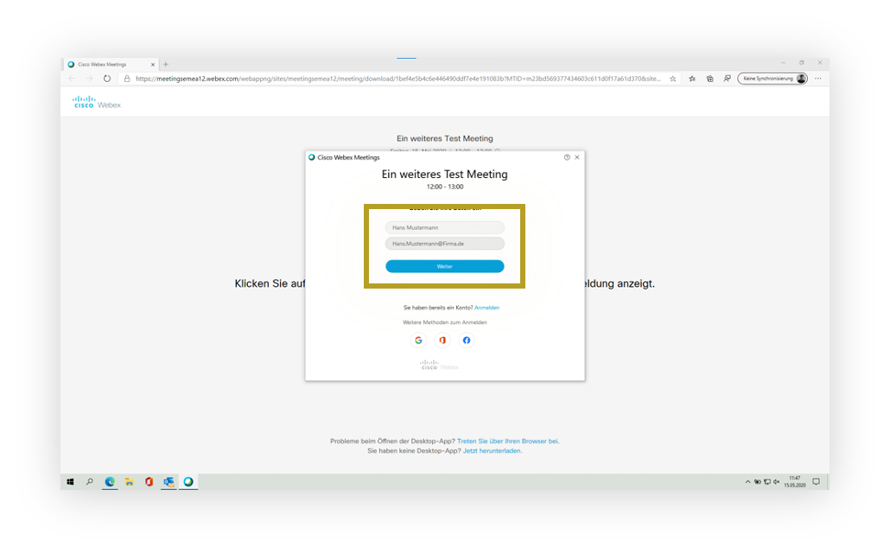
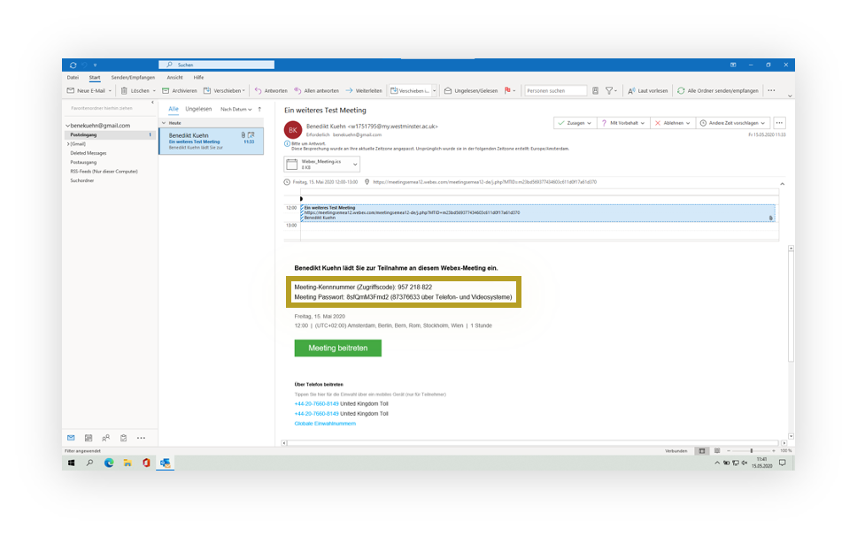
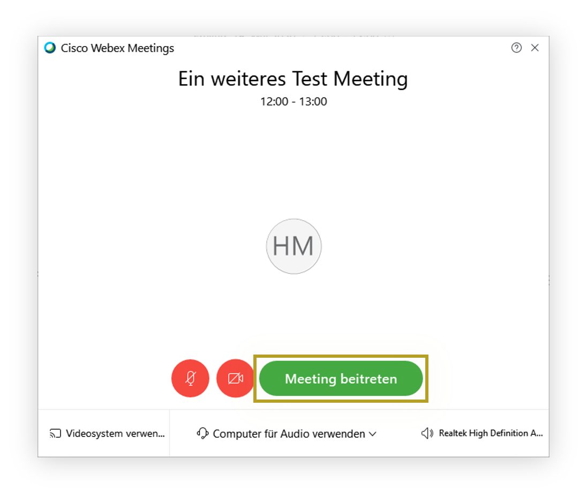

Anleitungen für Cisco WebEx
Haben Sie Fragen oder brauchen Unterstützung? Rufen Sie mich gerne an unter 0157-53582560.
Erster Schritt
Öffnen Sie die E-mail mit der Sie zu diesem Meeting eingeladen worden sind. Klicken Sie in der E-Mail auf die grüne "Meeting beitreten" Schaltfläche.

Zweiter Schritt
Wenn Sie zum ersten Mal einem Webex Meeting beitreten, lädt Webex die App automatisch herunter. Klicken Sie auf die Installationsdatei, um die App zu installieren.

Dritter Schritt
Nach der Installation, geben Sie ggf. Ihren Namen und Ihre E-Mail-Adresse im Fenster ein, und klicken Sie auf weiter.
Vierter Schritt
Falls Sie nach einem Passwort für das Meeting gefragt werden, geben Sie das Passwort aus der E-Mail für das Meeting ein und klicken Sie auf weiter.
Fünfter Schritt
Bevor Sie dem Meeting beitreten haben Sie nun die Möglichkeit einige Einstellungen vorzunehmen.
Achten Sie bitte darauf, Ihr Mikrofon stumm zu schalten, um störende Nebengeräusche und Echos in der Besprechung zu vermeiden. Während der Besprechung haben Sie jeder Zeit die Möglichkeit Ihr Mikrofon mit einem Klick auf den Mikrofon-Knopf wieder anzuschalten. Leuchtet der Knopf rot, dann ist ihr Mikrofon stumm geschaltet und Sie sind nicht zu hören.
Damit die anderen Teilnehmer der Besprechung Sie gut hören können, ist es ratsam ein Headset an Ihren Computer anschließen. Ihre Kopfhörer vom Handy reichen dafür vollkommen aus.
Sie sehen ebenfalls eine Vorschau Ihres Kamerabildes, dass die anderen Meeting-Teilnehmer sehen werden.

Sechster Schritt
Über den Kamera-Knopf am unteren Rand des Bildes haben Sie jederzeit die Möglichkeit Ihr Video an- oder auszuschalten. Diese Möglichkeit bleibt auch während der Besprechung vorhanden. Leuchtet der Knopf rot, dann ist Ihre Kamera ausgeschaltet und Sie sind nicht zu sehen.

Siebter Schritt
Klicken Sie nun auf die grüne Schaltfläche um dem Meeting beizutreten.
